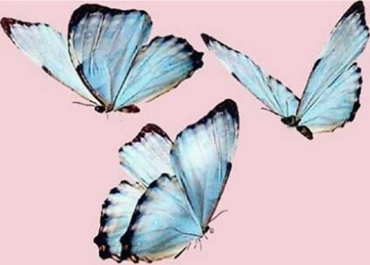

Olá, meu nome é Stephanie Santos e sou apaixonada pelo mundo da engenharia de software. Como estudante nessa área, estou constantemente desafiando meus limites e buscando novos conhecimentos para aprimorar minhas habilidades. A cada linha de código que escrevo, sinto uma sensação de realização e empolgação ao ver minhas ideias se transformarem em realidade.
Além dos estudos, meu maior prazer é viajar e explorar novos lugares, culturas e experiências. Cada viagem é uma oportunidade de aprendizado e crescimento pessoal, e estou sempre pronto para embarcar em uma nova aventura, seja para uma cidade vizinha ou para um destino distante e exótico.
No entanto, minha conexão mais profunda está com os animais. Desde pequena, sempre senti uma ligação especial com essas criaturas incríveis que compartilham nosso planeta. Cada encontro com um animal me lembra da beleza e da diversidade da vida na Terra. Sua inocência e lealdade me tocam profundamente, e estou comprometida em protegê-los e cuidar deles da melhor maneira possível.
No entanto, minha jornada não é sem obstáculos. Enfrento desafios únicos devido à minha condição de portadora de doença celíaca. Isso me ensinou a importância da autodisciplina, autocuidado e da atenção aos detalhes, especialmente quando se trata de escolhas alimentares. Mas não deixo que isso me impeça de desfrutar da vida ao máximo, encontrando prazer em cada momento, cada descoberta e cada novo sabor sem glúten que encontro pelo caminho.
Em resumo, sou uma estudante de engenharia de software apaixonada por conhecimento, uma defensora dos animais e uma viajante incansável em busca de novas aventuras.
Sou Stephanie, e estou pronta para enfrentar o mundo com entusiasmo e determinação. ♥
